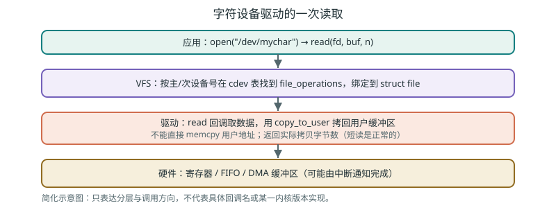

用户程序调用 read、write 或 ioctl 时，文件描述符背后可能对应磁盘、终端、网络设备或字符设备。内核如何把这些统一接口映射到具体硬件？答案涉及设备模型、总线匹配、驱动探测、设备树、DMA、中断和用户态/内核态数据交换。
本章沿着设备注册与驱动绑定的生命周期展开，再实现一个最小字符设备，解释 copy_to_user/copy_from_user 为什么不能用普通 memcpy 替代。随后介绍 Device Tree 描述硬件资源的方式，以及 Rust for Linux 的适用范围。驱动开发强烈依赖目标内核版本、架构、总线和设备手册；示例骨架不是可直接用于生产设备的完整驱动。
一、Linux设备模型
在动手写驱动之前，必须先理解Linux的设备模型。它不是一个可有可无的抽象——它定义了驱动、设备和总线之间如何建立连接，也是/sys文件系统的底层逻辑。
device / driver / bus 三剑客
Linux设备模型的核心是三个结构体，它们以"三角关系"紧密配合：
struct bus_type：代表一种总线类型（PCI、USB、SPI、I2C等）。总线负责完成两个关键工作：一是匹配设备和驱动（match函数），二是提供在总线上传输数据的操作方法。当你在 /sys/bus/pci/ 下看到的那些目录，每个都对应一个 bus_type 实例。
struct device：代表一个物理或虚拟设备。它包含设备所在的父总线、电源管理状态、DMA参数等信息。当内核检测到新硬件时（比如插入USB设备），会创建一个 device 实例并挂接到对应总线上。
struct device_driver：代表一个驱动程序。它不直接操作硬件，而是提供 probe() 和 remove() 回调。当bus的match函数发现一个device和一个driver匹配时，bus调用driver的 probe() 方法——驱动初始化硬件、注册中断、创建设备文件的逻辑从这里开始。
理解匹配过程：你在终端里运行 modprobe xyz 加载驱动时，内核会将这个driver和所有已注册的device进行匹配。反过来，当你插上一个新设备时，内核也会遍历总线上所有已注册的driver。这就是Linux设备模型的"热插拔"基础。无论是哪种方向，match → probe 的逻辑是不变的。
sysfs与设备树
/sys 文件系统是设备模型在用户空间的投影。你不必解析二进制数据或调用netlink——直接读文件就能看到设备的拓扑结构。比如 /sys/class/net/eth0/device/ 告诉你网卡在哪个PCI总线上，/sys/block/sda/size 告诉你磁盘扇区数。
# 查看块设备的拓扑结构
$ ls -l /sys/block/sda
lrwxrwxrwx 1 root root 0 Jun 30 09:00 /sys/block/sda -> ../devices/pci0000:00/0000:00:1f.2/ata1/host0/target0:0:0/0:0:0:0/block/sda
# 查看驱动的probe信息
$ ls /sys/bus/pci/drivers/nvme/
# 常见条目包括 bind、unbind、module、new_id、remove_id（依驱动而异）
# probe() 是内核驱动回调，不是通用 sysfs 文件
# 手动绑定/解绑驱动（调试有用）
$ echo -n "0000:01:00.0" > /sys/bus/pci/drivers/nvme/unbind
$ echo -n "0000:01:00.0" > /sys/bus/pci/drivers/nvme/bindudev的工作机制
当你插入一个USB键盘时，内核通过netlink socket向用户空间的 udevd 守护进程发送 uevent。udev根据 /etc/udev/rules.d/ 下的规则文件决定如何处置：创建什么设备节点？赋予什么权限？是否运行某个脚本？这就是"udev"（userspace /dev）的由来——把对设备的管理从内核空间迁移到用户空间，更灵活、更安全。
二、字符设备驱动实战
字符设备（char device）是最简单的设备类型——数据像字节流一样顺序读写。键盘、鼠标、串口都是典型的字符设备。写一个简单的字符设备驱动是理解Linux驱动框架的最佳入门实践。

驱动骨架
#include <linux/module.h>
#include <linux/fs.h>
#include <linux/cdev.h>
#include <linux/uaccess.h>
#define DEVICE_NAME "my_demo"
#define BUFFER_SIZE 1024
static int major;
static char device_buffer[BUFFER_SIZE];
static struct cdev my_cdev;
// file_operations —— 驱动和用户空间对话的接口
static int my_open(struct inode *inode, struct file *file) {
printk(KERN_INFO "my_demo: device opened\n");
return 0;
}
static ssize_t my_read(struct file *file, char __user *user_buf,
size_t count, loff_t *offset) {
size_t to_read = min(count, (size_t)(BUFFER_SIZE - *offset));
if (to_read == 0) return 0;
// copy_to_user —— 从内核空间拷贝数据到用户空间
if (copy_to_user(user_buf, device_buffer + *offset, to_read))
return -EFAULT;
*offset += to_read;
return to_read;
}
static ssize_t my_write(struct file *file, const char __user *user_buf,
size_t count, loff_t *offset) {
size_t to_write = min(count, (size_t)(BUFFER_SIZE - *offset));
if (to_write == 0) return -ENOSPC;
// copy_from_user —— 从用户空间安全拷贝数据到内核
if (copy_from_user(device_buffer + *offset, user_buf, to_write))
return -EFAULT;
*offset += to_write;
return to_write;
}
static struct file_operations my_fops = {
.owner = THIS_MODULE,
.open = my_open,
.read = my_read,
.write = my_write,
};
static int __init my_init(void) {
// 1. 分配设备号
major = register_chrdev(0, DEVICE_NAME, &my_fops);
if (major < 0) return major;
// 2. 初始化cdev并关联到file_operations
cdev_init(&my_cdev, &my_fops);
// 3. 将cdev添加到内核
dev_t devno = MKDEV(major, 0);
cdev_add(&my_cdev, devno, 1);
printk(KERN_INFO "my_demo: loaded, major=%d\n", major);
return 0;
}
static void __exit my_exit(void) {
dev_t devno = MKDEV(major, 0);
cdev_del(&my_cdev);
unregister_chrdev_region(devno, 1);
printk(KERN_INFO "my_demo: unloaded\n");
}
module_init(my_init);
module_exit(my_exit);
MODULE_LICENSE("GPL");| 步骤 | 函数 | 说明 |
|---|---|---|
| 1. 分配设备号 | register_chrdev 或 alloc_chrdev_region | 动态（推荐）或静态申请主次设备号 |
| 2. 初始化cdev | cdev_init() | 将cdev对象和file_operations结构体绑定 |
| 3. 添加cdev | cdev_add() | 将字符设备注册到内核，分配的设备号生效 |
| 4. 实现fops | open/read/write/release/ioctl | 用户态read/write最终调用到这里 |
| 5. 清理卸载 | cdev_del + unregister_chrdev_region | 按添加的反向顺序逐一释放资源 |
动手实验：如果你有Linux开发环境，把上述代码保存为 my_demo.c，编写一个Makefile使用内核的构建系统（kbuild），编译后用 insmod 加载，然后用 mknod /dev/my_demo c 240 0 创建设备节点（主设备号用你的实际major替换），最后用 echo hello > /dev/my_demo && cat /dev/my_demo 验证。一步步感受从代码到硬件交互的完整链路。
copy_to_user 为什么不能直接 memcpy？
初学者常问：为什么内核驱动里不用 memcpy 而要用 copy_to_user 和 copy_from_user？原因有两个：一是安全性——用户空间传递的指针可能指向非法地址，直接访问会导致内核崩溃（oops）；二是架构原因——某些架构上内核不能直接访问用户空间内存，需要特殊的指令（如x86的 movs 配合段寄存器）。copy_to_user 内部做了地址校验 + 页面错误处理，失败时返回未拷贝的字节数。
机制追踪：一次字符设备 read()，从设备节点到驱动回调经历了什么？
用户看到的是一个 /dev 下的文件名，内核看到的是主/次设备号与一组回调。按顺序看：
- open 解析设备号：VFS 根据设备节点的主/次设备号，在 cdev 表里找到驱动注册的
file_operations，把它绑定到本次打开的struct file。 - read 进入 VFS：用户态
read()先到 VFS，再由file->f_op->read（或read_iter）进入驱动回调，而不是直接碰硬件。 - 驱动取数据：回调从硬件寄存器、FIFO 或 DMA 缓冲区取数据；若数据未就绪，可能睡眠等待，也可能依赖中断在稍后通知完成——这取决于驱动与设备。
- copy_to_user 拷回：用
copy_to_user把内核缓冲区的数据拷到用户地址；失败返回EFAULT。不能直接memcpy，因为用户地址可能非法、缺页或被换出。 - 返回字节数：回调返回实际拷贝的字节数；短读（小于请求量）是正常现象，通常是暂时无数据或已到达末尾。
设备节点是硬件寄存器本身吗？
不是。设备节点只是“接口”：主/次设备号把内核路由到某个驱动的回调，驱动再决定如何访问寄存器、FIFO 或 DMA。同一份驱动代码可以在不同设备节点上实例化，因此 /dev 下的名字与硬件寄存器不是一一对应。
三、设备树（Device Tree）
在x86平台上，硬件拓扑信息通过ACPI（高级配置与电源管理接口）传递给内核——这是一个复杂的表格系统。但在ARM和RISC-V平台上，ACPI过于复杂和冗余，Linux内核采用了更精简的方案：设备树（Device Tree, DT）。
从.dts到.dtb的编译过程
设备树源文件（.dts）是一种人类可读的文本格式，描述硬件的寄存器地址、中断号、时钟频率等信息。通过设备树编译器（dtc）编译成二进制的 .dtb 文件。引导加载程序（U-Boot、GRUB）在启动内核时，将 .dtb 在内存中的地址传递给内核。内核解析 .dtb，自动创建 device 实例并尝试匹配驱动。
// 一个简单的设备树片段 — 描述UART控制器
/dts-v1/;
/ {
model = "Tutorial Board v1";
compatible = "tutorial,tb-v1";
chosen {
bootargs = "console=ttyS0,115200";
};
soc {
uart0: serial@10000000 {
compatible = "ns16550a";
reg = <0x10000000 0x1000>; // 基地址+地址范围
interrupts = <33>; // 中断号
clock-frequency = <3686400>;
status = "okay";
};
gpio0: gpio@20000000 {
compatible = "tutorial,gpio-v1";
reg = <0x20000000 0x1000>;
interrupts = <48>;
gpio-controller;
#gpio-cells = <2>;
status = "okay";
};
};
};内核驱动通过 of_match_table 声明它支持的设备，设备树中的 compatible 属性就是这个匹配的关键字：
static const struct of_device_id my_of_match[] = {
{ .compatible = "tutorial,gpio-v1", },
{ /* 结束标记 */ },
};
MODULE_DEVICE_TABLE(of, my_of_match);
static struct platform_driver my_driver = {
.probe = my_probe,
.remove = my_remove,
.driver = {
.name = "my_gpio",
.of_match_table = my_of_match,
},
};踩坑实录：设备树的 reg 属性中地址和大小单位极易混淆。在 <0x10000000 0x1000> 中，前者是基地址，后者是地址范围长度。但如果父节点定义了 #address-cells = <2>，那么每个地址需要两个32位单元！漏掉一个look-up会导致驱动ioremap到错误的地址——我曾在RK3399平台上被这个问题折磨了一整个下午。
四、Rust驱动开发初探
Rust for Linux 的基础设施在 Linux 6.1 合入主线，此后逐步增加内核抽象与驱动使用者。当前主线已有 Android Binder、若干 PHY 驱动、Nova GPU、DRM Panic、Null Block、Tyr GPU 等 Rust 使用者；列表会随内核版本变化，不能用某个旧版本清单代表当前全部状态。
| 驱动/模块 | 内核版本 | 说明 |
|---|---|---|
| Rust for Linux 基础设施 | Linux 6.1 (2022) | Rust作为第二语言的初始支持，核心抽象层 |
| Android Binder（Rust版） | Linux 6.12-6.13 | Android IPC核心驱动的Rust重写，更安全 |
| Nova GPU驱动 | Linux 6.14-6.16 | NVIDIA的开源Rust GPU驱动（基于GSP固件） |
| 以太网PHY驱动（Rust版） | Linux 6.17-6.18 | 网络PHY芯片驱动的Rust抽象 |
| Rust DMA/IOMMU抽象 | Linux 6.18-6.19 | DMA和IOMMU API的Rust绑定 |
为什么Rust在内核中如此重要？
常被引用的“约 70%”内存安全漏洞统计来自 Microsoft/Google 等厂商公开的漏洞分类，不能直接说成 Linux 内核漏洞的比例。Rust 的安全子集可在编译期阻止许多悬垂引用、越界访问和数据竞争，但内核驱动仍需要 unsafe 代码与硬件交互；unsafe 抽象若不满足安全契约，仍可能引入内存安全问题。
不仅仅是安全性：Rust的trait系统为驱动接口提供了比C函数指针更强类型的抽象。在C中，file_operations 是一个包含十几个函数指针的结构体，你很可能忘记初始化某个回调——内核会优雅地崩溃。Rust trait 可在类型层面表达接口约束，但不保证所有运行时条件都正确，也不能据此声称 Rust 驱动的 bug 率已被普遍量化为低于同类 C 驱动。安全性取决于 safe abstraction 的 soundness、unsafe 块、并发协议和驱动逻辑。
Nova驱动的意义尤其重大：它是NVIDIA首次在内核中提供开源的GPU驱动（传统的NVIDIA闭源驱动一直是个黑盒）。Nova 将一部分硬件管理工作交给 NVIDIA GSP 固件；Rust 代码可减少部分内存安全风险，但不能提供“根本保障”或消除固件、硬件和 unsafe 代码中的缺陷。Android Binder 与 Nova 等项目说明 Rust 已进入主线内核的实际使用阶段，但不能据此预测 Rust 会在 5–10 年内取代 C。
五、结语与下一章预告
本章我们从Linux设备模型的三大支柱（device、driver、bus）出发，手写了一个字符设备驱动，学习了设备树在ARM/RISC-V平台上的硬件描述方式，最后眺望了Rust驱动在Linux内核中的新兴浪潮。设备驱动是OS和硬件之间的最后一道桥梁——理解它，你就真正理解了"OS抽象硬件"这句话的背后代码。
只读观察：设备节点、主次设备号与设备模型
环境：Linux 主机，普通用户权限；只读取 /dev、/proc/devices 与 sysfs，不加载模块、不写设备。可用设备与类目录随内核与硬件变化。
ls -l /dev/null /dev/zero /dev/tty
head -n 20 /proc/devices
ls /sys/class | head
ls /sys/class/net 2>/dev/null预期：ls -l 首字符为 c 表示字符设备，逗号两侧是主/次设备号；/proc/devices 列出已注册的字符/块设备主设备号与驱动名；/sys/class 下按类组织设备。
解释：设备节点名只是接口，真正把 read/write 路由到哪个驱动由注册的主设备号决定；sysfs 则由设备模型导出 device/driver/bus 的层次。这也说明“设备节点 ≠ 硬件寄存器”。清理：均为只读命令。
驱动的核心工作方式离不开中断——硬件完成操作后通过中断通知CPU。下一章，我们将全面深入地学习中断与异常处理机制，看看操作系统是如何在"必须响应得快"和"要做的事情很多"这对矛盾中找到解决方案的。